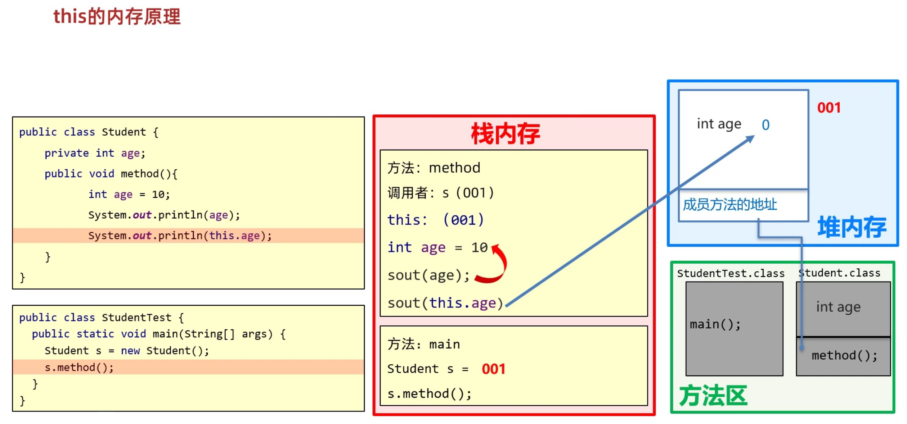
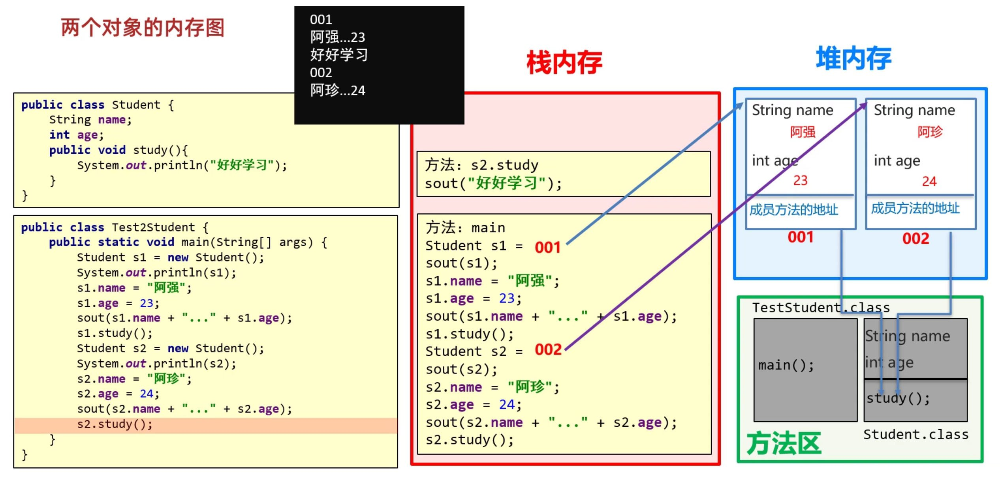
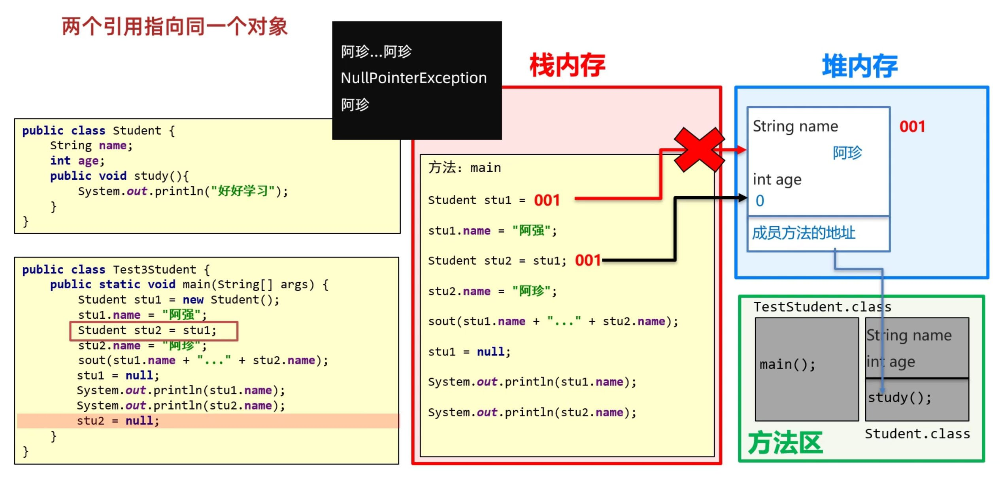
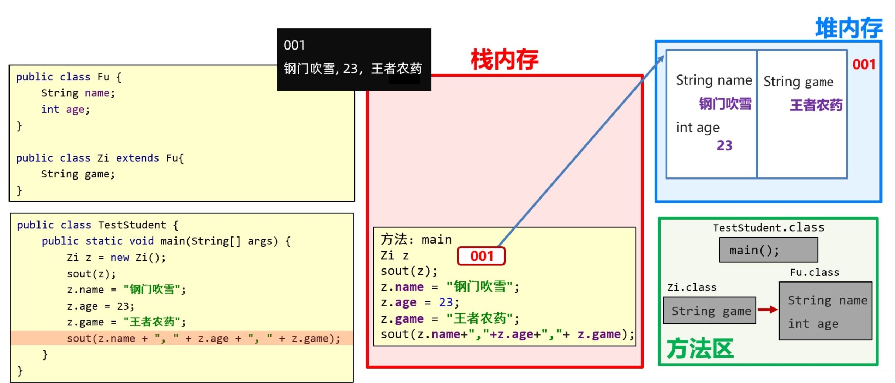
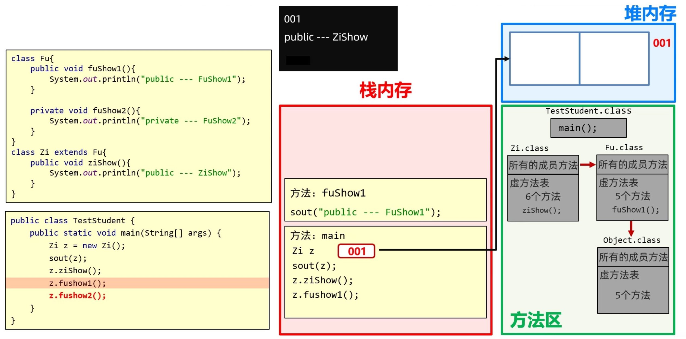

02_Java面向对象
一、类和对象
1. 基本概念
- 类是对现实生活中一类具有共同属性和行为的事物的抽象
- 类由属性和行为组成
- 属性：事物的特征。例如：学生姓名，年龄，性别
- 行为：事物能执行的操作。例如：上课，运动，打游戏
- 类是对事物的一种描述，对象是啥事物的具体存在。例如：学生类和具体的某个学生对象
- 类是对象的数据类型，类是具有共同属性和行为的一组对象的集合
- 类是对象的模板，对象是类的实例，模板决定了实体
2. 类和对象的定义
2.1 类
- 属性：在类中通过成员变量来体现（类中方法外的变量）
- 行为：在类中通过成员方法来体现
1 | |
2.2 对象
1 | |
2.3 类定义补充
- 类名使用大驼峰命名法，见名知意
- 一个 java 文件中可以定义多个 class 类，但是只能一个类是
public修饰的，public修饰的类名必须与文件名相同 实际开发建议一个文件定义一个 class 类
2.3.1 测试类
用来检查其他类是否书写正确，带有 main
方法的类，是程序的入口
- 可以在测试类中创建
JavaBean类的对象使用 - 可以在测试类中直接使用工具类的方法完成一些功能
1 | |
2.3.2 JavaBean 类
用来描述一类事物的类，叫做 JavaBean
类
- 类名需要见名知意，大驼峰命名
- 所有成员变量都是私有的，使用
private修饰 - 提供至少两个公共的构造方法
- 无参构造方法
- 带全部参数构造方法
- 对每个成员变量提供两个公共方法
setXxx()：用来设置属性 Xxx 的值getXxx()：用来获取属性 Xxx 的值（若属性类型为boolean，则方法名为isXxx()）
2.3.3 工具类
工具类是实现一些功能的类
- 类名需要见名知意，大驼峰命名
- 私有化构造方法
- 方法定义为静态
3. 封装
3.0 引入
当传参数很多的时候很麻烦，有了封装只需要传一个对象就可以
1 | |
3.1 封装思想
是面向对象三大特征之一（封装，继承，多态） 对象代表什么，就得封装对应的数据，并提供数据对应的行为
3.2 权限修饰符
作用：使用权限修饰符控制成员能被访问的范围
实际开发中，一般只用 private 和 public
- 成员变量私有
- 成员方法公开
特例：如果方法是抽取其他方法中的共性代码，这个方法一般也私有
3.2.1 private 关键字
private将类的某些信息隐藏在类内部，只允许在本类中访问- 针对
private修饰的成员变量，如果需要被其他类使用，提供相应的操作- 提供
getXxx()方法，用于获取成员变量的值，方法用public修饰 - 提供
setXxx(参数)方法，用于设置成员变量的值，方法用public修饰 #### 3.2.2 default 关键字
- 提供
default即默认/缺省，什么也不写，在同一包内可访问，不使用任何修饰符。
3.2.4 protected 关键字
protected同一包内和不同包下的子类可访问
3.2.3 public 关键字
public对所有类可见
3.3 成员变量与局部变量
- 类中位置不同
- 成员变量在类中方法外
- 局部变量在方法内部或方法声明上
- 内存中位置不同
- 成员变量在堆内存中（堆中对象里）
- 局部变量在栈内存中（栈中方法内）
- 生命周期不同
成员变量在对象创建的时候创建，在对象被销毁的时候销毁 引用数据类型没有被指向时空间会被释放
局部变量随着方法的调用而存在，随着方法调用完毕而消失
- 初始化值不同
- 成员变量有默认初始化值
- 局部变量无默认初始化值，使用之前需要赋值
- 作用域不同
- 成员变量在整个类中有效
- 局部变量在当前方法有效
3.4 static 关键字
3.4.1 实例成员与静态成员
- 静态成员：
- 被
static修饰的成员是属于类的，放在静态区中，叫类变量/方法或静态变量/方法 - 随着类的加载而加载，只加载一次，只存储一份，优先于对象存在
- 所有对象共享，可以直接通过类访问
- 被
- 实例成员：
- 没有
static修饰的成员是属于对象的，叫实例变量/方法 - 随着对象的创建而创建，每创建一个对象就存储一份
- 必须创建具体对象才能使用，通过对象访问
- 没有

3.4.2 静态变量
- 被
static修饰的成员变量叫做静态变量 - 直接用
类名.静态变量访问
3.4.3 静态方法
- 被
static修饰的成员方法叫做静态方法 - 直接用
类名.静态方法访问 - 常用在测试类和工具类中
- 静态方法没有
this关键字 - 静态方法只能访问静态变量和静态方法，不能访问非静态成员 静态方法属于类，不属于具体对象，而 this 指代对象，非静态成员属于某个具体对象
3.5 this 关键字
成员变量和局部变量名字冲突时，遵循就近原则，使用局部变量。使用
this
修饰的变量用于指代成员变量，可以区分成员变量和局部变量的重名
方法的形参和成员变量同名时，带 this 的指成员变量，不带
this 的指形参
1 | |
this的作用：区分局部变量和成员变量，用于普通的getter、setter方法和构造方法this的本质：代表方法调用者的地址值，即代表当前对象 s.method()，method 由 s 调用，this 代表 s 的地址值

4. 包
4.1 包的作用
包就是文件夹，是用来分门别类的管理技术，不同的技术类放在不同的包下，方便管理和维护
4.2 包的规则
- 公司域名反写.技术名称，需要全部英文小写，见名知意
- 包名每个路径必须是合法标识符，而且不能是
Java关键字
com.baoduo.search
4.3 导包
全类名：包名.类名 com.baoduo.search.Student
1 | |
- 使用同一个包里的类时，不需要导包
- 使用
java.lang包中的类时，不需要导包 - 其他情况都需要导包
- 如果使用两个包中的同名类，需要使用全类名
5. 构造方法
构造方法也叫构造器、构造函数，在创建对象的时候给成员变量进行初始化的，是一种特殊的方法 ### 5.1 构造方法的格式
- 方法名与类名相同，大小写也要一致
- 没有返回值类型，连
void都没有 - 没有具体的返回值，不能由
return带回结果数据
1 | |
5.2 构造方法的注意事项
- 构造方法的定义
- 如果没有定义构造方法，系统会给出一个默认的无参构造方法
- 如果定义了构造方法，系统不再提供默认构造方法
- 构造方法的重载
- 带参构造方法和无参构造方法，二者方法名相同，但是参数不同
- 推荐无论是否使用，都手写无参和带全部参数的构造方法
6. 代码块
6.1 局部代码块
提前结束变量的生命周期，节约内存（已淘汰）
1 | |
6.2 构造代码块
抽取构造方法中的重复代码（不够灵活，已淘汰） 创建对象时先执行构造代码块再执行构造方法
1 | |
6.3 静态代码块
- 随着类的加载而加载，并且只加载一次
- 常用来完成对数据的初始化
1 | |
7. 对象在内存
- 加载
class文件到方法区 - 在栈内存声明局部变量
- 在堆内存中开辟空间
- 默认初始化
- 显示初始化
- 构造方法初始化
- 将堆内存中的地址值赋给局部变量
7.1 单个对象
- 局部变量（对象名）在栈内存中，存储堆内存中对象的地址
- 堆内存中存储对象的成员变量和成员方法的地址

7.2 多个对象
class加载进入方法区后可直接使用，无需再次加载

7.3 两个引用指向同一对象
- 将对象名赋给对象名实际赋的是地址值
- 当没有指向堆内存中对象的变量时，堆内存中的对象会被释放

二、继承
1. 继承概述
1.0 引入
很多类具有很多相同的属性和方法，代码复用性差，维护麻烦 有了继承可以把相同的属性和方法抽取到父类当中，提高代码复用性
1 | |
1.1 什么是继承
继承：就是子类继承父类的属性和行为，使得子类对象可以直接具有与父类的属性和行为。继承描述的是事物之间的所属关系，例如，兔子属于食草动物，食草动物属于动物
- 继承者称为子类（派生类）
- 被继承者称为父类（基类或超类）
1.2 继承的好处
- 可以把多个子类中重复的代码抽取到父类中，提高代码的复用性
- 子类可以在父类基础上增加其他的功能，使子类更强大
- 使类与类之间产生了关系
1.3 什么时候使用继承
- 类与类之间存在共性的内容
- 子类是父类中的一种
2. 继承的格式
通过 extends
关键字，可以声明一个子类继承另外一个父类
1 | |
- Java 只支持单继承，不支持多继承，但支持多层继承
- 所有的类都直接或间接地继承于
Object类
3. 继承的特点
3.1 构造方法
- 子类不能继承父类的构造方法，但是可以通过
super()调用 - 子类初始化之前一定要先调用父类构造方法完成父类的初始化
- 子类构造方法第一行语句必须为
super()，不写也默认存在 - 如果想调用父类有参构造，必须手写
super(参数)调用
1 | |
3.2 成员变量
- 所有的成员变量都能继承，但
private的无法访问，可以通过getter/setter方法访问 - 就近原则：先在局部位置找，找不到再去本类成员位置找，找不到再去父类成员位置找，逐级向上
- 什么都不加：从局部位置开始找
this：从本类成员位置开始找super：从父类成员位置开始找

3.3 成员方法
- 只有父类中虚方法表中的成员方法才能被子类继承
- 虚方法表：父类把虚方法表继承给子类，子类加上自己的虚方法，一层一层向下继承
- 非
private - 非
static - 非
final
- 非
- 就近原则：先在虚方法表中找，找不到再去父类成员位置找，逐级向上
this：从本类成员位置开始找super：从父类成员位置开始找

3.4 方法的重写
当父类的方法不能满足子类的需求时，需要进行方法的重写
- 重写的方法尽量和父类保持一致
- 重写方法的名称、形参列表必须与父类的一致
- 子类重写分类方法时，访问权限必须要大于等于父类（
public>protected> 空着不写） - 子类重写父类方法时，返回值必须小于等于父类
- 只有被添加到虚方法表中的方法才能被重写
- 私有方法不能被重写
- 静态方法不能被重写
方法重写的本质：覆盖方法表中的方法
@Override
重写注解：放在重写的方法上，可以检验重写的语法是否正确，代码安全优雅，可读性强
4. this 和 super 使用总结
this：理解为一个局部变量，表示当前方法调用者的地址值super：表示父类对象的存储空间
- 访问成员变量
this.成员变量访问本类成员变量super.成员变量访问父类成员变量
- 访问成员方法
this.成员方法()访问本类成员方法super.成员方法()访问父类成员方法
- 访问构造方法
this()访问本类构造方法super()访问父类构造方法
1 | |
5. final 关键字
5.1 final 的作用
修饰方法：表明该方法是最终方法，不能被重写 方法中是某种规则，只让使用，不想让变其内容
修饰类：表明该类是最终类，不能被继承 整个类中的方法都不想被改变内容
修饰变量：叫做常量，只能被赋值一次
5.2 常量
实际开发中，常量一般作为系统的配置信息，方便维护，增强可读性 常量的命名规范：单词全部大写，单词词之间用下划线隔开
fianl修饰基本变量：变量存储的数据值不能发生改变final修饰引用类型：变量存储的地址值不能发生改变，对象内部可以发生改变 String 不能改变的原因就是使用了 private final
6. 抽象类
6.1 概述
- 抽象方法：将共性方法抽取到父类之后，由于每个子类执行的具体内容不同，所以在父类中不能确定具体的方法体，该对象就可以定义为抽象方法
- 抽象类：如果一个类中存在抽象方法，那么该类必须声明为抽象类
6.2 定义格式
1 | |
6.3 特征和意义
抽象类拥有了抽象方法的能力，失去了创建对象的能力，不能实例化 > 假设抽象类对象调用抽象方法，抽象方法无方法体，无意义
抽象类中不一定有抽象方法，有抽象方法的类一定是抽象类 >没有抽象方法的抽象类目的就是不让创建该类对象
可以有构造方法 > 创建子类对象时给属性赋值
抽象类的存在是为了被子类继承 >抽象类确定了成员，不确定如何实现的抽象方法交给子类去实现
继承抽象类的子类：
- 要么重写抽象类的所有抽象方法
- 要么子类也声明为抽象类 > 假设不重写，调用抽象方法没有意义
意义：强制让子类按照某种格式重写，在多人开发过程中提高代码规范
三、多态
0. 引入
以学校教务系统为例，学生和老师都需要登录，而登录方法只能接收一种类型的对象，需要写两个逻辑一样的方法，代码非常冗余 多态使一个方法可以接收他的所有子类，只需写一个方法
1 | |
1. 多态概述
定义：同类型的对象，表现出的多种形态
- 有继承关系
- 父类引用指向子类对象「格式体现」
- 方法重写「意义体现，不重写无意义」
2. 多态的格式和运行特点
1 | |
- 调用成员变量时：编译看左边，运行也看左边
javac编译代码时，看左边父类中有没有这个变量，如果有编译成功，没有则编译失败java运行代码时，实际获取的是左边父类中成员变量的值
- 调用成员方法时：编译看左边，运行看右边
javac编译代码时，看左边父类中有没有这个方法，如果有编译成功，没有则编译失败java运行代码时，实际运行的是右边子类中重写的方法 实质还是虚方法表的覆盖

3. 多态的优势和弊端
- 优势：方法中使用父类型作为参数，可以接收所有子类对象，还可以根据传递的对象来调用不同类中的方法
- 弊端：由于多态编译看左边父类类型，所以不能使用子类的独有功能
弊端的解决：强制类型转换
- 转换成真正的子类类型，可以调用子类的独有功能
- 转换类型与真实对象类型不一样会出现类型转换异常
- 转换的时候使用
instanceof关键字判断可避免类型转换异常
1 | |